关注公众号【算法码上来】，每日算法干货马上就来！

本文对成分句法分析近年来的进展做了一个比较完善的总结。分析了多种不同类型的成分句法分析模型（基于转移，动态规划和序列到序列等），比较了它们之间的优缺点，并总结了一些提升它们性能的技巧。最后，本文对成分句法分析的未来发展趋势表明了自己的一些看法。
介绍
成分句法分析近年来取得了飞速的发展，特别是深度学习兴起之后，神经句法分析器的效果得到了巨大的提升。一般来说，句法分析器都可以分为编码模型和解码模型两个部分。编码模型用来获取句子中每个单词的上下文表示，随着表示学习的快速发展，编码模型也由最初的LSTM逐渐进化为了表示能力更强的Transformer （VaswaniSPUJGKP17）。而解码模型方面，也诞生了许多不同类型的解码算法，比如基于转移系统（transition-based）的解码算法（WatanabeS15, CrossH16, LiuZ17a），基于动态规划（chart-based）的解码算法（SternAK17, KleinK18）和基于序列到序列（sequence-to-sequence）的解码算法（BengioSCJLS18, Gomez-Rodriguez18）等等。
基于转移系统的句法分析模型主要通过预测生成句法树的动作序列来还原出一棵句法树。按照遍历树的顺序，具体还可以分为自底向上（bottom-up）的转移统（CrossH16），自顶向下（top-down）的转移系统（WatanabeS15）和基于中序遍历（in-order）（LiuZ17a）的转移系统。基于转移系统的句法分析模型优点是速度快，因为它解码的时间复杂度是线性的。而缺点就是在解码的时候无法考虑短语的边界信息，这会导致解码的精度上相比于基于动态规划的模型稍微差一点。
基于动态规划的句法分析模型主要通过递归地预测每个短语得分最高的子短语，最后回溯还原出最优句法树。优点就是可以枚举出搜索空间中的所有句法树，解码效果比较好。但是动态规划算法时间消耗较大，复杂度是句子长度的平方级别的。所以针对这个缺点，又提出了近似的自顶向下的贪心解码算法（SternAK17），按照句法树的前序遍历顺序进行搜索，在不损失太多性能的前提下，能大大加快解码的速度。
基于序列到序列的句法分析模型主要思想就是将句法树映射为一个唯一对应的序列表示，然后通过序列标注（Gomez-Rodriguez18）或者序列生成（VinyalsKKPSH15）的方式来预测出这个序列。根据句法树序列化的不同定义方式，模型也有许多不同的变体。这一类模型的优点就是速度极快，因为时间复杂度也是线性的，并且模型参数量比基于转移系统的模型少了很多。缺点也是显而易见的，由于预测出的序列需要有很强的约束，不然不能保证可以还原出一棵完整的句法树，所以最终的效果也没有前面两种模型理想。
此外还有许多其他类型的解码算法，比如直接利用神经网络来预测语法产生式的概率，模拟上下文无关文法，最后再利用传统的CKY算法来进行解码（TengZ18）。该模型最终也取得了非常不错的效果，在单模型上的结果超过了之前的几种模型。
成分句法分析可以应用到许多下游任务中去，比如情感分析任务中，可以采用树状LSTM（Tree-LSTM）来对句子的句法树进行建模，从而分析出句子的情感（ZhuSG15）。也可以应用到其他基础任务中去，比如可以将训练好的成分句法树根据规则转化为依存句法树，从而提升依存句法分析的准确率（Gildea04）。
任务定义
成分句法分析是自然语言处理中的一个基础任务，它的任务是给定一个长度为$n$的句子$(w_0, w_1, \ldots, w_{n-1})$，分析出句子的短语结构句法树$T$。例如给定句子“The little boy likes red tomatoes .”，它的成分句法树如图1所示。
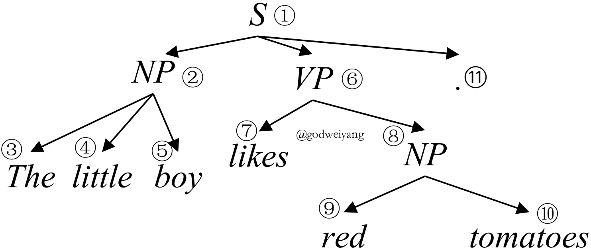
对于句法树$T$，有多种方式来对它进行表示。目前比较常用的是基于跨度（span）的表示（CrossH16），也就是将句法树表示成组成它的所有短语的集合。而对于每个短语，可以用三元组$(i, j, \ell)$来表示它，其中$i$和$j$表示这个短语的范围是从单词$w_i$到$w_j$，而$\ell$表示这个短语的非终结符标签。这样句法树$T$就可以表示为三元组$(i, j, \ell)$的集合：
$$
T = \{(i, j, \ell) | (i, j, \ell) \in T\}.
$$
这样预测句法树的任务就可以转化为预测三元组$(i, j, \ell)$集合了。
当然一般还存在两个小问题，一是如果存在一元产生式怎么办？一种解决方法就是将一元产生式上面的所有非终结符全部拼接成一个新的非终结符，这样整个一元产生式就可以看成一个非终结符了。另一个问题是句法树不一定是二叉树，那么解码的时候就会增加许多搜索的复杂度。解决方法就是新增一个空的非终结符$\varnothing$，将非二叉产生式全部转化为多个二叉产生式，其中新增加的临时结点的非终结符全部定义为这个空的非终结符$\varnothing$，在还原句法树的时候直接忽略它就行了。
编码模型
给定句子$(w_0, w_1, \ldots, w_{n-1})$，编码模型的目的就是获得每个单词的上下文表示，并进一步计算出每个短语的向量表示。在实际实现中，一般将单词$x_i$的输入向量分为三部分。首先是它对应的随机初始化的嵌入向量$e_i$。然后是这个单词的词性对应的随机初始化的嵌入向量$p_i$，一般它的词性可以通过外部词性标注器来得到。最后是这个单词的字符级别表示$c_i$，这个一般可以通过字符级别的CNN或者LSTM来得到。最后将三部分向量拼接得到最终的输入向量$x_i$：
$$
x_i = [e_i; p_i; c_i].
$$
然后将输入向量送入编码器，得到每个单词的上下文表示。而根据采用的编码器的不同，又可以将编码模型分为以下几种主要类型。
LSTM编码
这是最为常用的一种编码方式了，首先将所有$x_i$输入到双向LSTM中，得到每个位置的前向隐层表示$\mathord{\buildrel{\hbox{$\scriptscriptstyle\rightarrow$}}\over{h}}_i$和后向隐层表示$\mathord{\buildrel{\hbox{$\scriptscriptstyle\leftarrow$}}\over{h}}_i$。然后对于短语$(i, j)$，它可以表示为：
$$
s_{ij} = [\mathord{\buildrel{\hbox{$\scriptscriptstyle\rightarrow$}}\over{h}}_j - \mathord{\buildrel{\hbox{$\scriptscriptstyle\rightarrow$}}\over{h}}_i; \mathord{\buildrel{\hbox{$\scriptscriptstyle\leftarrow$}}\over{h}}_i - \mathord{\buildrel{\hbox{$\scriptscriptstyle\leftarrow$}}\over{h}}_j].
$$
这样就得到了短语$(i, j)$的向量表示$s_{ij}$，接着就可以计算出它的得分，然后利用解码模型解码出最优的句法树。
Transformer编码
虽然LSTM编码用的最多，但是要问最近这段时间最火的模型是什么，那当然是Transformer了（VaswaniSPUJGKP17）。它可以充分利用GPU的并行计算优势，加快计算速度。还可以利用注意力机制，增强对句子的表示能力。
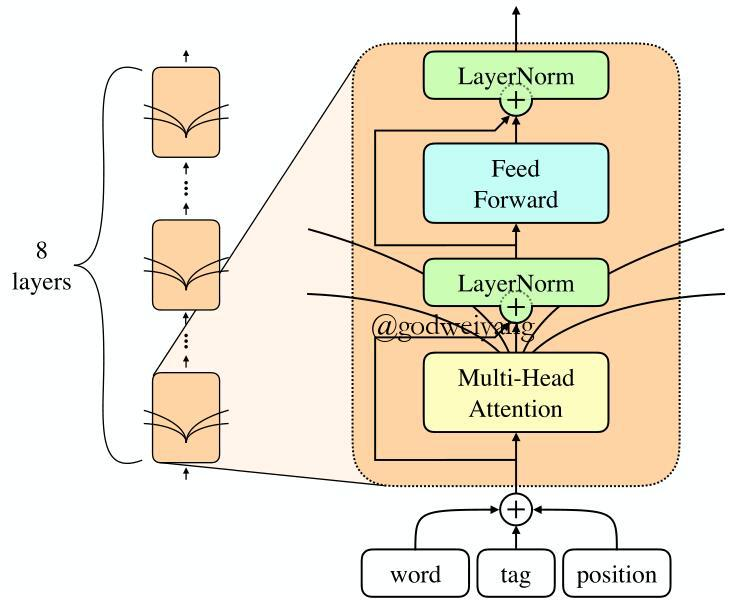
Transformer的输入有三个，查询（query）向量矩阵$Q$，键（key）向量矩阵$K$和值（value）向量矩阵$V$。
输出就是查询向量对每个键向量的注意力，然后对值向量加权求和的结果。用矩阵形式表示就是：
$$
{\rm Attention}(Q, K, V) = {\rm softmax}(\frac{QK^{\top}}{\sqrt{d_k}})V.
$$
当然还可以加入多头（multi-head）注意力机制，增强表示能力，具体这里不再赘述，可以参看原论文。最后将输出乘以参数矩阵${\bf W}_O$映射回需要的输出维度，得到最终的输出矩阵$H$，具体结构如图2所示。
在本文中，$Q$，$K$和$V$三个矩阵都是通过对句子的输入向量拼接而成的矩阵$X$，分别乘以参数矩阵${\bf W}_Q$，${\bf W}_K$和${\bf W}_V$得到的。但是要注意的一点是，在此前的输入向量$x_i$的基础之上，还得再拼接上每个单词的位置向量$p_i$，不然矩阵运算会丢失单词的位置信息。
得到输出矩阵之后，接下来计算短语的表示方法和LSTM编码是类似的。
递归神经网络编码
递归神经网络在自然语言处理中的应用最早是在（SocherBMN13）中提出的。虽然当时取得了不错的效果，但是近些年来递归神经网络已经很少有人使用了，主要因为它存在梯度消失，需要句法树等问题，并且它的初衷（编码树结构信息）由循环神经网络LSTM基本也可以学到，所以没有必要用这种不能并行的网络结构。
对于短语$(i, j)$，如果它的两个儿子结点是$(i, k)$和$(k, j)$，那么$s_{ij}$就可以由$s_{ik}$和$s_{kj}$计算得到：
$$
s_{ij} = f({\bf W}[s_{ik};s_{kj}]+{\bf b}),
$$
其中，$f$是激活函数，一般可以取${\rm tanh}$。
当然这种结构现在已经很少使用了，现在用的较多的递归结构是树状LSTM，网络结构和递归神经网络基本相同，唯一的区别就是将计算单元$f$替换成LSTM中的隐层单元，这样可以有效地解决梯度消失和长距离依赖的问题。
得分计算
采用以上几种编码模型得到了每个短语的向量表示之后，接下来可以用两层前馈神经网络计算出它的得分：
$$
\begin{aligned}
s_{\rm{label}}(i, j, \ell) & = {\bf v}_{\ell}^{\top}f({\bf W}_{\ell}^2f({\bf W}_{\ell}^1s_{ij} + {\bf b}_{\ell}^1) + {\bf b}_{\ell}^2), \\
s_{\rm{span}}(i, j) & = {\bf v}_s^{\top}f({\bf W}_{s}^2f({\bf W}_{s}^1s_{ij} + {\bf b}_{s}^1) + {\bf b}_{s}^2),
\end{aligned}
\tag{1}
$$
其中$f$是激活函数，这里通常取${\rm ReLU}$。这里我们将短语$(i, j)$的得分分成了两部分，一部分是它的非终结符$\ell$的得分$s_{\rm{label}}(i, j, \ell)$，一部分是跨度的得分$s_{\rm{span}}(i, j)$。
最后，定义一棵句法树的总得分为它包含的所有短语的标签得分与跨度得分之和：
$$
s_{\rm tree}(T) = \sum\limits_{(i, j, \ell) \in T}{s_{\rm{label}}(i, j, \ell) + s_{\rm{span}}(i, j)}.
$$
而接下来要介绍的解码模型的任务，就是去寻找一棵句法树，使得它的得分最高。
基于转移系统的解码算法
基于转移系统的解码模型主要分为三种。第一种是自底向上的转移系统，第二种是自顶向下的转移系统，最后一种是基于中序遍历的转移系统。这些转移系统的共同点是都包含两个组成成分，一个是栈（stack），用来存放已分析的句法结构，另一个是缓存（buffer），用来存放待分析的句子。而预测句法树结构就转化为了预测转移系统每一个时刻应该采取的动作（action）序列。下面我们分别介绍几种不同的转移系统，我们用三元组$[S, B, T]$来表示转移系统每一个时刻的状态，分别代表栈顶元素、缓存的第一个单词和句法分析结束标志。
自底向上的转移系统
自底向上的转移系统是根据句法树的后序遍历（post-order）顺序进行句法分析的，首先将缓存中的单词移进栈里，然后将栈顶的若干个单词归约为它们的父结点，直至最后缓存为空并且栈里只有一个根节点。
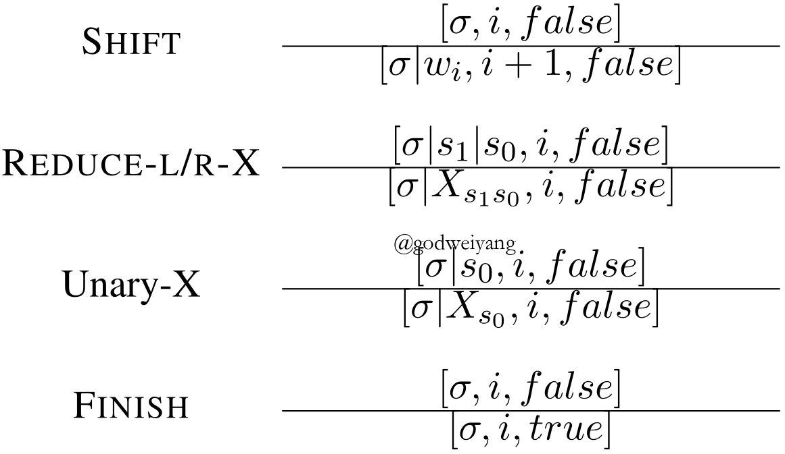
自底向上转移系统的动作形式化定义如图3所示，其中移进（SHIFT）动作就是将缓存里面的第一个单词移进栈里。归约（REDUCE-L/R-X）动作就是将栈顶的两个元素出栈，并且归约为它们的父结点X，然后再将父结点入栈，而L和R就是用来区分左儿子和右儿子谁是头结点。一元（Unary-X）动作就是将栈顶元素出栈，并且归约为父结点X，这个动作是用来预测一元产生式的。最后完成（FINISH）动作用来判断句法分析是否结束。
注意到这里有一个问题，自底向上转移系统一般要提前对句法树进行二叉化。主要原因是因为自底向上系统有个弊端，就是在不停地移进之后，你不仅要预测哪一步开始归约，还得预测归约的话要归约栈顶的多少个元素，这样预测的状态数就大大增加，导致训练时间也增加了许多。而二叉化后每次预测就只需要预测哪一步归约就行了，每次归约只归约栈顶的两个元素。
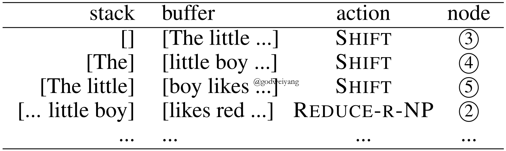
对于图1中的句法树，用自底向上转移系统分析的过程如图4所示。
自底向上转移系统的优点就是可以充分利用已经生成的子树信息，来帮助父结点的非终结符预测。但是缺点也很显然，因为无法知道父结点以及再上层的父结点信息，所以丢失了许多有用的全局信息。另一个缺点就是需要提前进行二叉化，虽然二叉化加入了头结点（head）信息，事实证明是很有用的，但是头结点的标注需要许多语义学知识，非常的耗时耗力。一个较为简洁的做法就是，用空结点$\varnothing$来作为句法分析中临时结合两个子结点而产生出的，但是在正确句法树中不存在的结点。在还原树结构的时候忽略这种空结点，这样就可以隐式地进行二叉化操作了。
自顶向下的转移系统
自顶向下的转移系统利用的是句法树的前序遍历（pre-order）序列，首先将父结点入栈，然后不断操作直到它的子结点全部入栈，这时将父结点连同所有子结点全部归约为一个结点，也就是这个父结点自身。
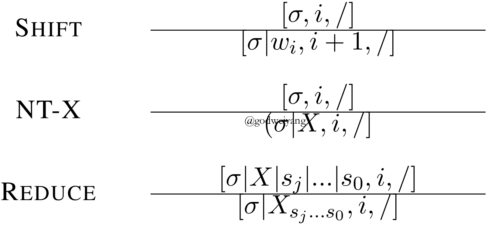
自顶向下转移系统的动作形式化定义如图5所示，其中移进动作和之前一样，都是将缓存的第一个单词入栈。而非终结符（NT-X）动作就是将非终结符X入栈，也就是接下来的子树的父结点就是X。归约动作就是将栈顶若干个元素，一直到之前移进的那个父结点为止都出栈，然后归约为一个结点，再次入栈。注意到这里不同于自底向上转移系统的地方是没有完成动作，因为自底向上系统存在一元动作，所以最后根节点可能会无限归约下去，因此需要通过完成动作来提前终止分析。当然其实转移系统的动作定义并没有严格的要求，不同论文定义的也都不一样，但是都大同小异，也就是都存在移进和归约这两个动作，所以这些转移系统又可以叫做移进-归约系统。
对于图1中的句法树，用自顶向下系统分析的过程如图6所示。
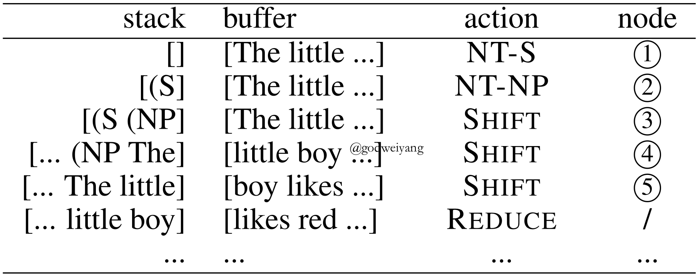
自顶向下转移系统的优缺点和自底向上转移系统恰好互补。优点就是可以充分利用全局信息，例如父结点的信息，并且不需要提前进行二叉化，因为归约的时候只要找到栈里第一个非终结符就行了。而缺点就是无法利用局部信息，也就是已经分析好的子树信息，同样非终结符动作也可能会出现无限多次执行的情况，所以要加上一些限制条件。
基于中序遍历的转移系统
基于中序遍历的转移系统利用的是句法树的中序遍历（in-order）序列，首先将最左边的子结点移进栈里，然后将父结点入栈，再不断操作直到该父结点的剩余子结点全部入栈，然后对它们进行归约。
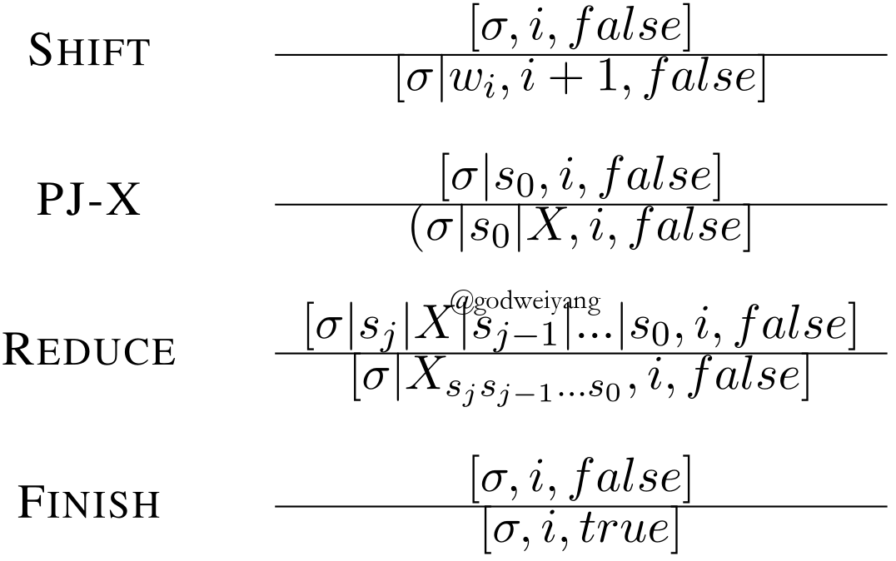
基于中序遍历的转移系统的动作形式化定义如图7所示，其中移进动作和之前一样，都是将缓存的第一个单词入栈。映射非终结符（PJ-X）动作是预测出当前栈顶的元素的父结点X。归约动作就是将栈顶的若干个元素归约为最里面倒数第二个元素，也就是它们的父结点。
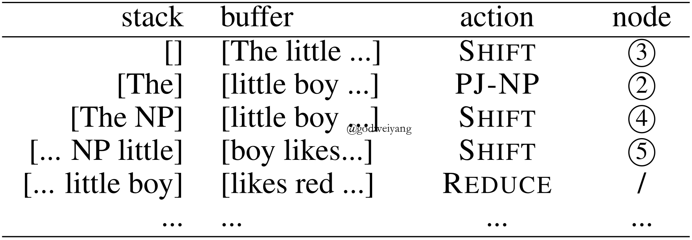
对于图1中的句法树，用基于中序遍历的系统分析的过程如图8所示。
根据经验，当我们读一个短语时，我们通常会注意到它的第一个单词，然后我们可以根据观察到的词推断出短语的类型。例如，当我们读到“likes”这个词时，我们可以假设紧跟着这个词的是一个动词短语。而后面的单词“red tomotoes”只是这个动词短语的宾语。与自顶向下的转移系统相比，“likes”中的局部信息对于识别这是一个动词短语可能至关重要。此外，动词短语（VP）中的全局信息也有利于之后的预测。
基于中序遍历的转移系统的优点恰好结合了前面两种转移系统，既可以考虑到局部信息，又可以考虑到全局信息。
生成模型
之前介绍的三种转移系统都属于判别式模型，而基于自顶向下转移系统，又诞生出了一种生成式模型——循环神经网络文法（RNNG）。循环神经网络文法本质上就是自顶向下的转移系统，动作定义和章节自顶向下的转移系统介绍的基本一致。只是之前介绍的自顶向下的转移系统是判别式模型，每次移进的单词都是缓存中给定正确的单词。而循环神经网络文法每次移进的单词需要通过动作生成（GEN-X）预测得出，最终模型对预测出来的句子分析出句法树。
正式定义就是，对于句子$x$和对应的句法树$y$，判别式模型是对条件概率$p(y | x)$进行建模，而生成式模型是对联合概率$p(x, y)$进行建模。
而循环神经网络文法的另一个重要应用是语言模型（language model），也就是建模$p(x)$。因为$p(x) = \sum\nolimits_{y \in \mathcal{Y}(x)} {p(x,y)}$，所以只需要枚举出所有可能的句法树$y$即可，但是这是指数级别的，显然不现实，这时候就需要用到“重要性采样（importance sampling）” （doucet2009tutorial）。
令$q(y | x)$为循环神经网络文法作为判别式模型的时候产生句子$y$的条件概率，那么$p(x)$可以改写为
$$
\begin{aligned}
p(x) & = \sum\nolimits_{y \in \mathcal{Y}(x)} {p(x,y)} \\
& = \sum\nolimits_{y \in \mathcal{Y}(x)} {q(y|x)w(x,y)} \\
& = {\mathbb {E}_{q(y|x)}}w(x,y),
\end{aligned}
$$
其中$w(x,y)=p(x,y)/q(y|x)$。然后就可以采用蒙特卡罗方法进行采样了，从分布$q(y | x)$中采样$N$个样本：
$$
{y^{(i)}} \sim q(y|x),i = 1,2, \ldots ,N.
$$
那么$p(x)$就可以近似表示为：
$$
\begin{aligned}
p(x) & = {\mathbb{E}_{q(y|x)}}w(x,y) \\
& \mathop \approx \limits^{\rm MC} \frac{1}{N}\sum\limits_{i = 1}^N {w(x,{y^{(i)}})}.
\end{aligned}
$$
在实验效果上，生成模型的效果要明显好于判别模型，因为它不仅对句法树的概率进行了建模，还对整个句子的语言模型概率也进行了建模。当然在实现上也稍微复杂了一些，主要采样这个操作耗时比较多，因此采样数量不能太多，通常个位数就够了，程序运行时间会成倍增加。
基于动态规划的解码算法及其变体
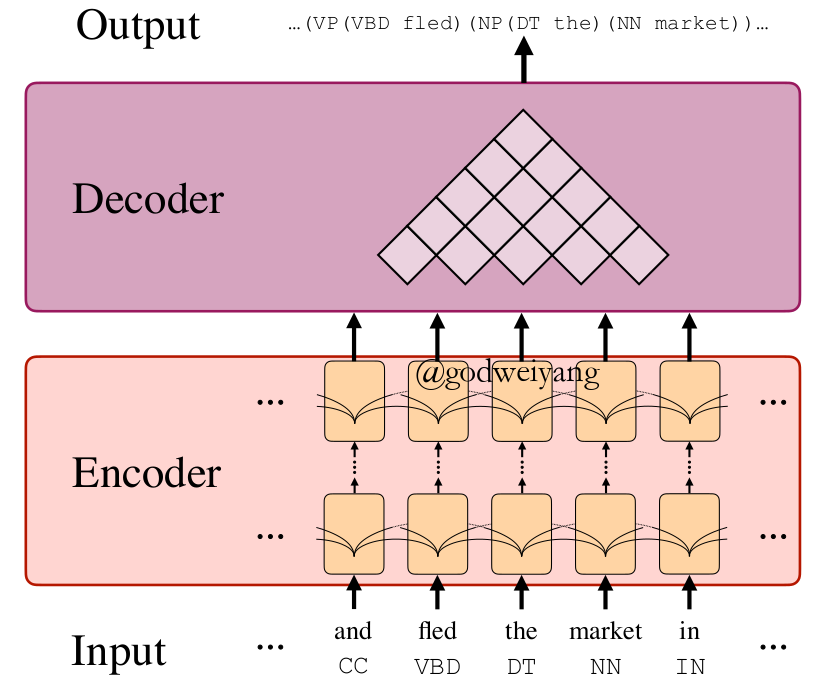
这一类解码算法是由传统的CKY算法启发而来的（cocke1970programming）。传统的CKY算法是通过枚举每一个结点处的产生式来状态转移到下一个子结点，然后寻找出概率最大的那一个产生式。而这里的基于动态规划的解码算法是采用神经网络，计算出每个短语的得分，然后枚举它的所有子短语，计算出总得分最高的那棵子树。图9是这一类解码算法加上编码模型整体的模型结构。
动态规划解码
解码算法的初衷是求出得分最高的那棵子树，但是状态空间太大了，不可能枚举所有的句法树，所以就只能用动态规划算法求解了。
对于任意一个跨度$(i, j)$，我们利用公式1计算所有它所有非终结符的得分。直接取得分最高的那一个非终结符$\hat \ell_{ij}$作为最优的非终结符。
而对于子短语，我们只需要预测出$(i, j)$的最优分割点即可。遍历所有的分割点$k$，取两个子结点$(i,k)$，$(k,j)$与结点$(i, j)$得分之和最高的那个分割点即可：
$$
\begin{aligned}
s_{\rm split}(i, j, k) & = s_{\rm label}(i, j, \hat \ell_{ij}) \\
& + s_{\rm label}(i, k, \hat \ell_{ik}) + s_{\rm label}(k, j, \hat \ell_{kj}).
\end{aligned}
$$
注意这里计算得分取了非终结符的得分$s_{\rm label}(i, j, \ell)$，并没有取跨度的得分$s_{\rm span}(i, j)$。因为在实际实现中，发现加不加这部分得分影响不大，所以为了简化运算，去掉了这项得分。
动态规划解码算法的时间复杂度是$O(n^3)$的，所以对于稍长一点的句子，运行起来还是挺慢的。但是好处是可以搜索到所有的状态空间，所以准确率上比较高。
自顶向下贪心解码
因为动态规划解码算法时间复杂度太高了，所以可以用贪心解码来近似求解最优句法树。思路是自顶向下、贪心地去选择每一个跨度$(i,j)$的最优分割点和最优非终结符$\hat \ell_{ij}$，这样时间复杂度将降到$O(n^2)$。
具体实现如下，首先从根结点也就是$(0, n)$开始，选择一个分割点$\hat k$，使得两个子结点$(0, \hat k)$，$(\hat k, n)$与根结点$(0, n)$的得分之和最高，而非终结符还是像之前那样直接通过短语的向量表示计算得出。具体公式为：
$$
\begin{array}{l}
\hat \ell = \mathop {\arg \max }\limits_l [{s_{\rm label}}(i,j,\ell)] \\
\hat k = \mathop {\arg \max }\limits_k [{s_{\rm split}}(i,j,k)].
\end{array}
$$
自顶向下贪心解码时间复杂度低，而且实际运行中并没有损失太多精度，所以可以很好地近似动态规划解码算法。而由转移系统的三种遍历顺序，自然而然还可以想到，这里也能推广到自底向上和中序遍历的贪心解码，但是由于这里预测的时候只利用到了局部的短语特征，所以仅仅更改遍历的顺序是没有效果的，还得充分利用到预测的历史信息才行。
基于序列到序列的解码算法
前面几个章节都是将句法树视为若干跨度的集合，并预测这个集合，最后还原出句法树。这个章节将要介绍的方法都是基于序列的，也就是将句法树序列化，通过预测句法树对应的序列，然后还原出句法树。
基于括号表达式
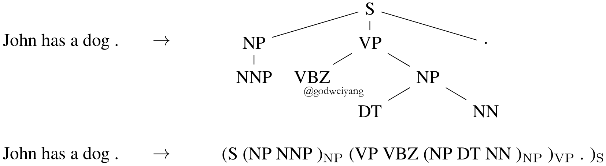
括号表达式是句法树最为常见的一种序列化方法，图10展示了句子“John has a dog .”对应的括号表达式。可以证明，括号表达式和句法树是一一对应的，所以只要预测出了括号表达式，就可以唯一映射到一棵句法树。这样句法分析任务就转化为了输入一个句子，输出一个括号表达式序列，这可以用常见的序列到序列模型来解决（VinyalsKKPSH15)。类比到机器翻译任务，可以把输入句子当成源语言，输出的括号表达式当做目标语言，这就转化为了一个翻译任务。
但是这种序列化方法存在一个较大的问题，就是限制性太强了，必须要满足输出的序列是一个合法的括号表达式，这就大大增加了预测的难度。所以一般这种序列化方法都是用来重排序的，也就是先用现成的句法分析器预测出概率最大的若干棵句法树，然后预测这几棵句法树对应的括号表达式的语言模型概率，挑选出概率最高的一棵作为最终的模型输出。
基于句法距离
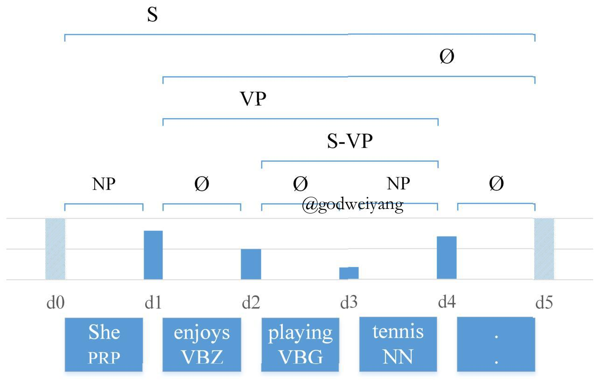
句法距离（syntactic distance）是由（ShenLHC18)首次提出的新概念，句子中相邻两个单词的句法距离定义为它们俩的最近公共祖先的高度。图11展示了句子“She enjoys playing tennis .”的句法距离序列，对于长度为$n$的句子，它的句法距离序列长度为$n - 1$，并且满足如下条件：对于任意两个相邻的单词对，它们的最近公共祖先高度越高，那么它们俩的句法距离就越大（BengioSCJLS18）。
以图11为例，“She”和“enjoys”的最近公共祖先是“S”，所以高度最高，对应的句法距离也最大。“enjoys”和“playing”的最近公共祖先是“VP”，高度排第三，所以对应的句法距离大小也是排第三。依次类推，剩下的句法距离也满足这个性质。可以证明，这个数字序列和句法树是一一对应的。更进一步可以发现，这个序列其实就是“中序遍历的结点的高度”，原文中将其称为句法距离。
当然实际实现中，句法距离并不一定要和结点高度完全对应，甚至不需要是整数，只需要反映出彼此之间的大小关系就行了。预测这个序列也很简单，原文中并没有使用传统的双向LSTM序列标注的模型结构，而是首先将句子输入到一个双向LSTM，然后将每相邻两个单词的隐层输出做一次卷积操作（因为要预测相邻两个单词的最近公共祖先的高度），然后再将卷积输出送到一个双向LSTM中去，最后通过一个前馈神经网络得到每相邻两个单词的句法距离。
解码过程十分简单，对于一个句法距离序列$d_1, d_2, \ldots, d_n$，首先找出序列中最大的元素$d_i$，然后下标小于$i$的句子构成了左子树，大于等于$i$的部分构成了右子树，即句法树的括号表达式为$((x_{<i})(x_{\ge i}))$。而对于左右两棵子树，只需要递归解码下去就行了。
当然这种解码方式仍然存在一个问题，就是句法距离序列并不一定能唯一映射回句法树。例如对于序列$(1, 1, 1, 1)$，当出现相同句法距离时，最大的句法距离并不唯一，这时候选谁做根节点都有可能，所以这个句法距离序列可以对应到任意一棵二叉树。当然在实际运行中，因为预测结果都是浮点数，所以几乎不会出现这种情况。
其他解码算法
除了以上介绍的基于转移系统的、基于动态规划的和基于序列预测的解码算法以外，还有一些其他的解码算法。
比如（TengZ18）提出了两种局部模型。一种是直接预测每个跨度$(i, j)$属于句法树的概率，然后使用CKY算法来进行解码。另一种是预测产生式$(i, j) \to (i, k) (k, j)$的概率，然后还是使用CKY算法来进行解码。这两种模型都取得了非常高的F1值。
再比如（TuZZ18）提出了高斯混合隐向量文法（GM-LVeGs），来学习产生式的向量表示，最终的效果也是要好于之前的组合向量文法（CVG）（SocherBMN13）。
若干改进
上面介绍的几种经典的句法分析模型或多或少都有一些问题，有些解码速度很慢，有些效果不是很理想，有些实现起来比较麻烦，对于不同模型要做出不同的设计调整，因此许多工作针对这些模型提出了许多优化，下面选取两个典型的优化来详细说明。
动态指导
在基于转移系统的模型和动态规划模型的自顶向下近似解码模中，都使用到了贪心的解码算法。这样就会出现一个问题，就是训练的时候因为有标准的句法树，所以不论你解码到哪一步，都可以继续按照正确的结果走下去。但是如果在测试阶段，如果你预测出了一个从来没有在训练阶段出现过的状态，那模型可能就无法知道下一步该往哪走了。这时候就要采用动态指导（dynamic oracle），来告诉模型在错误的状态该往哪走。
这里只简单说明一下动态规划模型的自顶向下近似解码中动态指导的定义，基于转移系统的模型的动态指导类似。
假设现在模型预测出了一个跨度$(i, j)$，那么下面就要预测它的非终结符和分割点。
首先对于非终结符，如果$(i, j)$在标准的句法树中，那么它的非终结符就是标准的非终结符，否则的话就定义为空集$\varnothing$。
然后对于分割点，如果$(i, j)$在标准的句法树中，那么分割点就是标准的分割点。否则的话就在标准的句法树中寻找包含$(i, j)$的最小的跨度$(i’, j’)$，然后找出$(i’, j’)$的所有分割点中，位于$(i, j)$之间的分割点，任意取一个都可以作为动态指导。在实际实现中，取满足条件的最左边一个分割点。不同的分割点对应了不同的二叉化方式，其实无关紧要。在（CrossH16）中有关于动态指导详细的证明过程。
策略梯度
除了动态指导解决的问题之外，贪心解码还存在一个问题，就是它只针对当前时刻来进行优化，而不是针对全局优化，所以得到的并非是全局最优解。此外动态指导针对不同的模型要进行单独的设计，这就比较麻烦，所以可以采用强化学习中的策略梯度（policy gradient）来替代它（FriedK18）。
首先用风险函数（risk objective）来作为模型的损失函数：
$$
\mathcal{R}(\theta ) = \sum\limits_{i = 1}^N {\sum\limits_y {p(y|{x^{(i)}};\theta )\Delta (y,{y^{(i)}})} },
$$
其中$(x^{(i)}, y^{(i)})$是训练集中的标准数据。可以看出，风险函数其实就是所有可能的句法树和标准树的差异${\Delta (y,{y^{(i)}})}$的期望，训练的目的就是最小化所有句法树和标准树的差异，这样就解决了之前提到的两个问题。
但是显然不可能枚举所有可能的句法树，这就得用到重要性采样（important sampling）方法。但是不能直接对风险函数进行重要性采样，不然采样后的函数$\theta$消失了，就没有办法对其求导了，所以要先对风险函数求导得到：
$$
\nabla \mathcal{R}(\theta ) \approx \sum\limits_{i = 1}^N {\sum\limits_{y \in \mathcal{Y}({x^{(i)}})} {\Delta (y,{y^{(i)}})\nabla \log p(y|{x^{(i)}};\theta )} },
$$
这里的$y$是根据分布$p(y|x^{(i)})$采样得到的结果。具体实现中可以将标准树也加入到采样结果中，可以提升准确率。
实验
数据集
成分句法分析使用最为广泛的英文数据集是华尔街日报的PTB数据集，其中第2~21章节划分为了训练集，22章节为验证集，23章节为测试集。中文数据集为CTB数据集，目前已经有5.0，6.0以及8.0等多个版本，但是使用最为广泛的还是5.0版本。
实验结果
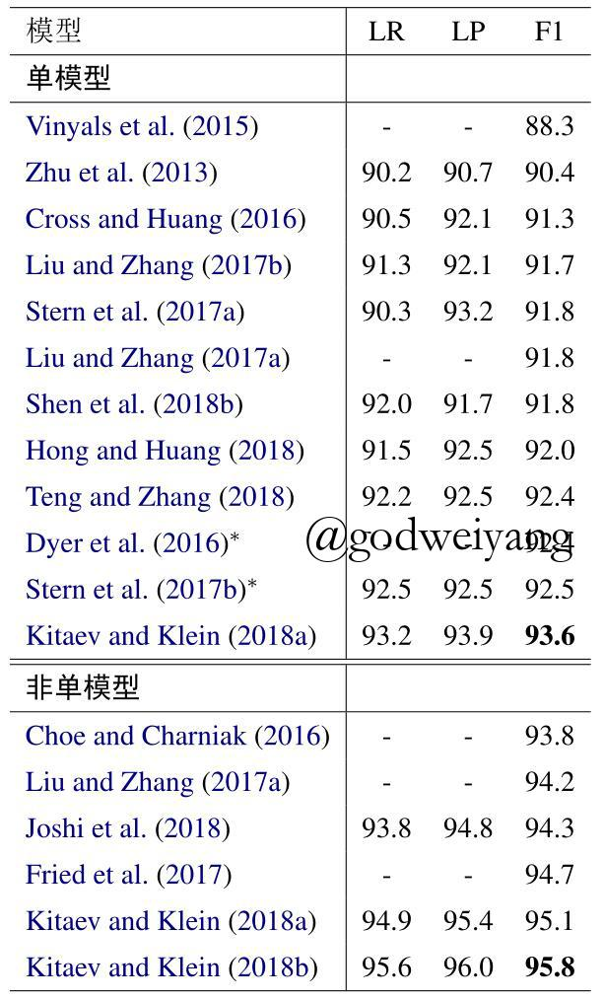
表1列举了一些句法分析模型的测试结果，分为了单模型和非单模型两部分。其中单模型就是不使用任何外部知识及重排序等操作的模型，而非单模型则使用了外部语料、预训练模型、模型融合和重排序等各种方法。目前单模型最好的结果来自于（KleinK18），他们采用了Transformer作为编码器，使其结果得到了大大提升。由此可见，目前成分句法分析领域编码器的影响要远远大于解码器。而非单模型领域最好结果则来自于相同团队的工作（abs-1812-11760），这里他们使用了更为强大的预训练模型BERT，使结果上升到了一个难以逾越的高度。
总结与未来展望
本文介绍了成分句法分析领域近些年来的进展，列举了几种不同类型的成分句法分析模型（基于转移系统、基于动态规划、基于序列到序列），并对比分析了它们之间的优缺点，最后提出了几种常见的改进。
可以预见，未来成分句法分析的研究方向将会是在编码模型方面，因为解码模型对性能的提升已经到了瓶颈期，而编码模型不仅可以大大提升模型效果，还可以运用在无监督成分句法分析上。
参考文献
- Attention is All you Need
- Transition-based Neural Constituent Parsing
- Span-Based Constituency Parsing with a Structure-Label System and Provably Optimal Dynamic Oracles
- In-Order Transition-based Constituent Parsing
- A Minimal Span-Based Neural Constituency Parser
- Constituency Parsing with a Self-Attentive Encoder
- Straight to the Tree: Constituency Parsing with Neural Syntactic Distance
- Constituent Parsing as Sequence Labeling
- Grammar as a Foreign Language
- Two Local Models for Neural Constituent Parsing
- Long Short-Term Memory Over Tree Structures
- Dependencies vs. Constituents for Tree-Based Alignment
- A tutorial on particle filtering and smoothing: Fifteen years later
- Programming languages and their compilers: Preliminary notes
- Parsing with Compositional Vector Grammars
- Policy Gradient as a Proxy for Dynamic Oracles in Constituency Parsing
- Multilingual Constituency Parsing with Self-Attention and Pre-Training
- Fast and Accurate Shift-Reduce Constituent Parsing
- Shift-Reduce Constituent Parsing with Neural Lookahead Features
- Linear-time Constituency Parsing with RNNs and Dynamic Programming
- Recurrent Neural Network Grammars
- Effective Inference for Generative Neural Parsing
- Parsing as Language Modeling
- Extending a Parser to Distant Domains Using a Few Dozen Partially Annotated Examples
- Improving Neural Parsing by Disentangling Model Combination and Reranking Effects
- Neural Language Modeling by Jointly Learning Syntax and Lexicon
- Gaussian Mixture Latent Vector Grammars